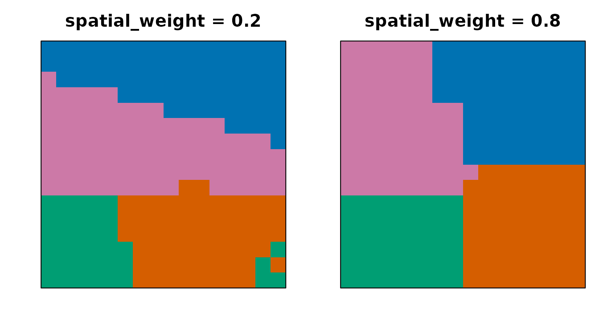
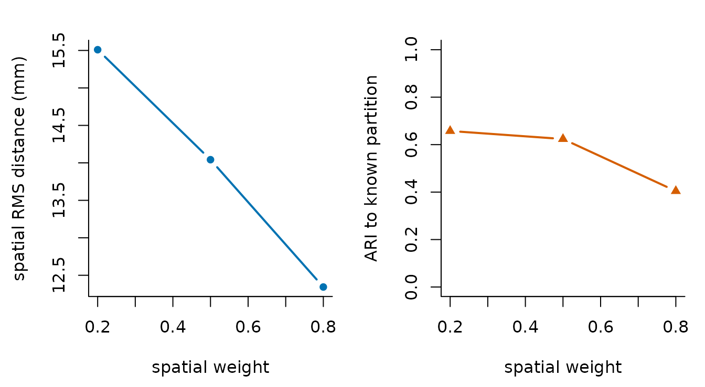

Understand spatially constrained clustering
Source:vignettes/spatially-constrained-clustering.Rmd
spatially-constrained-clustering.RmdOrdinary clustering can group distant voxels because their time series look alike. Spatially constrained clustering adds location or neighbourhood structure so the output is a set of parcels rather than a scattered label map. The scientific choice is not “spatial or functional”; it is how the method defines and balances both forms of evidence.
What does spatial weight change?
In the unified API, spatial_weight lies in
[0, 1]. Higher values give more influence to spatial
compactness. Each wrapper maps that common scale to a method-native
objective, so equal numeric values do not make different algorithms
mathematically identical.
The example below holds data, K, algorithm, and seed fixed while changing only G3S’s unified spatial weight. It uses a genuinely 3-D fixture so the spatial term acts across all three axes.
spatial_weights <- c(0.2, 0.5, 0.8)
weight_fits <- lapply(spatial_weights, function(weight) {
cluster4d(
syn$vec, syn$mask, n_clusters = 4, method = "g3s",
spatial_weight = weight, connectivity = 26, parallel = FALSE
)
})| spatial_weight | ari_to_known | spatial_rms_mm |
|---|---|---|
| 0.2 | 0.658 | 15.51 |
| 0.5 | 0.624 | 14.04 |
| 0.8 | 0.404 | 12.34 |

The same middle axial slice at low and high G3S spatial weight. A one-to-one maximum-overlap assignment preserves four distinct fitted parcels while aligning their arbitrary IDs to the four known colors.

Two explicit sensitivity estimands. Larger spatial weight reduces physical RMS dispersion on this fixture, while agreement with the known feature-defined partition also changes. Neither axis alone defines quality.
What to notice. Changing the weight moves boundaries even though K is fixed. On this fixture, higher weight produces lower physical dispersion, but agreement with the known feature-defined partition also falls. That tradeoff is measured here rather than inferred from appearance; it is not a universal G3S trend or evidence that either endpoint is “better.”
What does connectivity mean?
Connectivity defines which mask voxels are neighbours in methods that
expose it. Six-neighbour connectivity uses shared faces. Larger 3-D
neighbourhoods can also include edge- or corner-touching voxels.
Supported values are method-specific, and cluster4d()
rejects a value a method cannot use rather than silently ignoring
it.
Connectivity is also a feasibility constraint. If a mask has multiple disconnected components, no connected clustering can produce fewer parcels than components without crossing excluded space. A requested K is therefore a target, not permission to violate topology.
How should artifacts be diagnosed?
Inspect all three anatomical planes, cluster-size distributions, and boundary sensitivity across defensible settings. Slice-wise algorithms deserve an explicit cross-slice check; Consensus and stitching shows what stitching changes. Continue with Choose parameters for tuning and Validate and compare clusterings for defined comparison estimands.